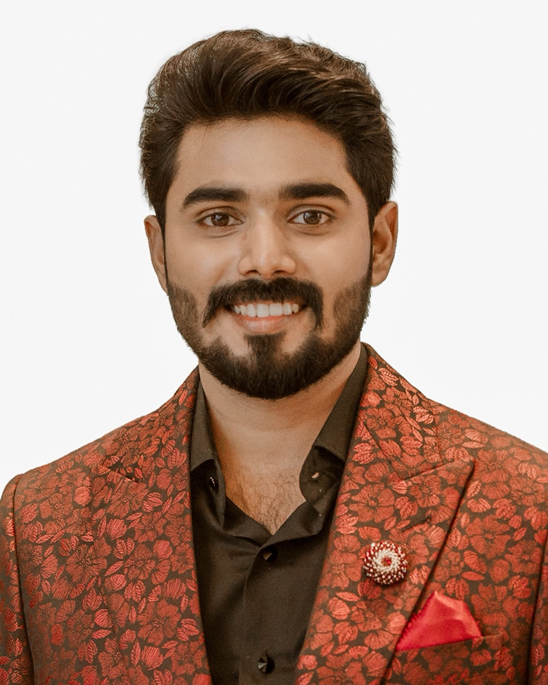

Vimalesh Vedachalam
Vimalesh Vedachalam is the Founding Owner of Chennai Strikers and Chief Executive Officer of Veda Pile Tech India Pvt. Ltd.
Professional Background
As Chief Executive Officer of Veda Pile Tech India Pvt. Ltd., Vimalesh leads a Chennai-based engineering business operating under the VEDAPILE brand and its “Grounded Excellence” philosophy.
Franchise Role
As Founding Owner of Chennai Strikers, Vimalesh supports the creation of a disciplined and professionally managed youth franchise with a strong focus on opportunity, visibility, accountability and sustainable growth.
Franchise Vision
His vision for Chennai Strikers is to create an environment where talented young players can compete confidently, develop strong professional habits and represent their franchise with pride. The franchise aims to value preparation, teamwork, consistency and respect for the game.
Owner Responsibilities
- Franchise leadership and strategic direction
- Building team culture and identity
- Supporting player welfare and development
- Working with TNYPL league and technical officials
- Promoting professional standards and fair competition
- Supporting the long-term growth of the franchise
Public Business Information
VEDAPILE · Veda Pile Tech India Pvt. Ltd. · www.vedapile.com